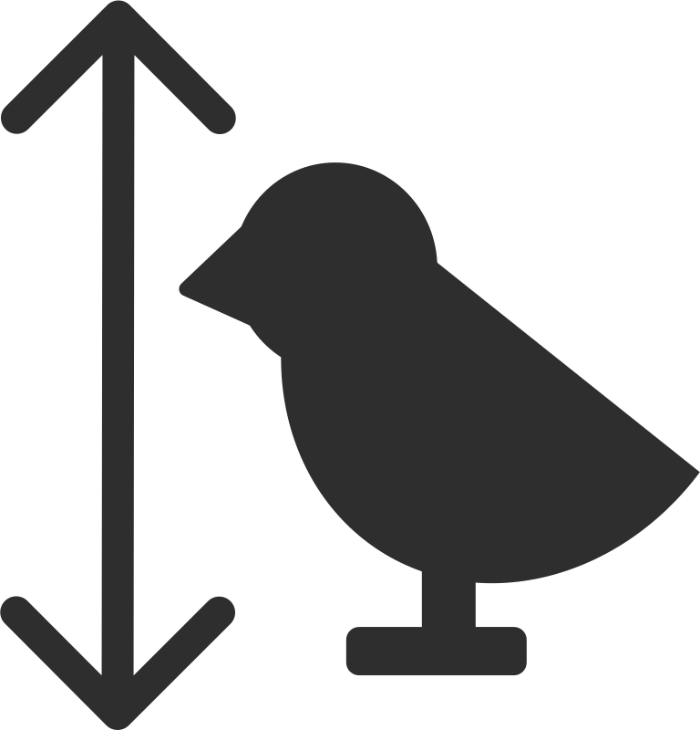

Coal Tit
Description
A very small, less commonly seen tit found in gardens, woodlands and forests. Even smaller than the Blue Tit, these tiny birds are much more grey and light brown compared to more brightly-coloured Great Tit and Blue Tits.
- All year

- Gardens & forests
- 
- Very small (11cm)
Spotting Tip
Though still just as pretty, Coal Tits have much more dull-coloured feathers compared to Great Tits and Blue Tits. Coal Tits also have a small white patch on the back of their neck, which can make them easier to tell apart.